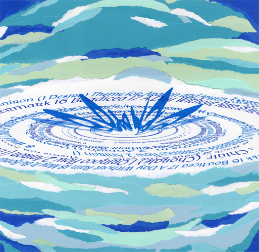
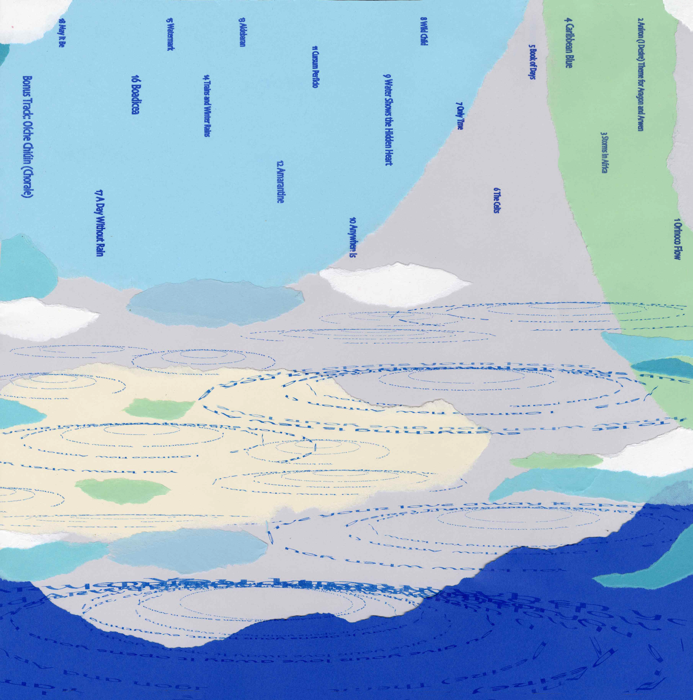
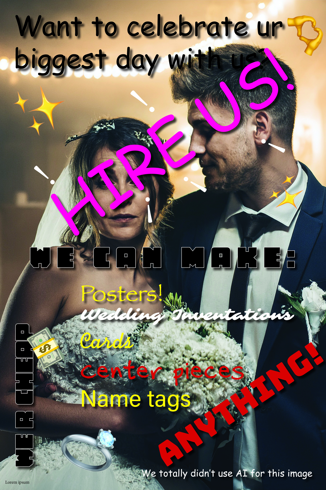

This project was for Typography II. We were task to create a unique album cover design for Enya's vinyl release. I used Risography to create the water droplet effects for the type but tear the paper apart to create a collage, imitating water ripples.


This project was an experiemtnal exploration of graphic design techniques, where I experimented with various visual elements and layouts to create a striking and unconventional poster design. Our task was to create a poster that would give graphic designer "nightmares". It was a cohort competition where we competed against each other in a class of 32 students.

This project explored the intersection of human creativity and artificial intelligence in design. I experimented with AI-generated elements and integrated them with traditional design techniques such as collage to create a unique visual identity.

This was done in mixed elements to play with surrealism of astronauts playing with bubbles like a soccor ball.

Copyright © 2026 Samantha McClain